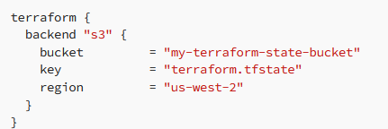

STATE is a json file that tracks the state of infrastructure resources managed by Terraform. By default, the name of the file is terraform.tfstate and whenever you update the first state, a backup is generated called terraform.tfstate.backup.
This state file is stored locally by default, but can also be stored remotely using a remote backend such as Amazon S3, Azure Blob Storage, Google Cloud Storage, or HashiCorp Consul. The Terraform state file includes the current configuration of resources, their dependencies, and metadata such as resource IDs and resource types. There are a couple of products that help with managing state and provide a sophisticated workflow around Terraform like Spacelift or Terraform Cloud
How does it work?
When Terraform is executed, it reads the configuration files and the current state file to determine the changes required to bring the infrastructure to the desired state. Terraform then creates an execution plan that outlines the changes to be made to the infrastructure. If the plan is accepted, Terraform applies the changes to the infrastructure and updates the state file with the new state of the resources.
You can use the terraform state command to manage your state.
- terraform state list: This command lists all the resources that are currently tracked by Terraform state.
- terraform state show: This command displays the details of a specific resource in the Terraform state. The output includes all the attributes of the resource.
- terraform state pull: This command retrieves the current Terraform state from a remote backend and saves it to a local file. This command is useful when you want to make manual operations in a remote state.
- terraform state push: This command uploads the local Terraform state file to the remote backend. This command is useful after you made manual changes to your remote state.
- terraform state rm: This command removes a resource from the Terraform state. This doesn’t mean the resource will be destroyed, it won’t be managed by Terraform after you’ve removed it.
- terraform state mv: This command renames a resource in the Terraform state.
- terraform state replace-provider: This command replaces the provider configuration for a specific resource in the Terraform state. This command is useful when switching from one provider to another or upgrading to a new provider version.
Amazon S3 Backend
The Amazon S3 backend is a popular choice for remote state storage. To configure the Amazon S3 backend, you will need to create an S3 bucket and an IAM user with permissions to access the bucket. Here is an example of how to configure the Amazon S3 backend in Terraform:

The S3 backend supports locking, but to do that you will need also need a dynamodb table. The table must have a partition key named LockID as a string. If this is not configured, state locking will be disabled.

Remote State Data Source
The Terraform Remote State Data Source, like any other data source, retrieves existing information. This special data source, doesn’t depend on any provider, this allows you to retrieve state data from a previously deployed Terraform infrastructure. This can be useful if you need to reference information from one infrastructure to another.
To use a remote state data source in Terraform, you first need to configure the remote state backend for the infrastructure you want to retrieve data from. This is done in the backend block in your Terraform configuration as specified above. After you create your infrastructure for the first configuration, you can reference it in the second one using the remote data source.

In the above example, we are supposing that we have a configuration in the directory “../config1” that has some Terraform code up and running. In that code, we have declared a “var1” output, that we are referencing in our null resource.
Best Practices
There are several best practices for managing Terraform state, including:
- Use a remote backend: Storing the Terraform state file remotely provides several benefits, including better collaboration, easier access control, and improved resilience. Remote backends such as Amazon S3 or HashiCorp Consul can be used to store the state file securely and reliably.
- Use locking: When multiple users are working on the same Terraform project, locking is necessary to prevent conflicts. Locking ensures that only one user can modify the state file at a time, preventing conflicts and ensuring changes are applied correctly. As shown before, there are many backends that support locking.
- Use versioning: Your configuration should always be versioned, as this will make it easier to achieve an older version of the infrastructure if something goes wrong with the changes you are making.
- Isolate state:
- Don’t add hundreds of resources in the same state: Making a mistake with one resource can potentially hurt all your infrastructure
- Have a single state file per environment: When making changes, it is usually a best practice to first make the change on a lower environment and after that promote it to the higher one
- Use Terraform workspaces: Terraform workspaces allow users to manage multiple environments, such as development, staging, and production, with a single Terraform configuration file. Each workspace has its own state file, allowing changes to be made to each of them
5. Use modules: Versioned modules will make it easier to make changes to your code, hence changes will be easier to promote across environments, making operations to the state less